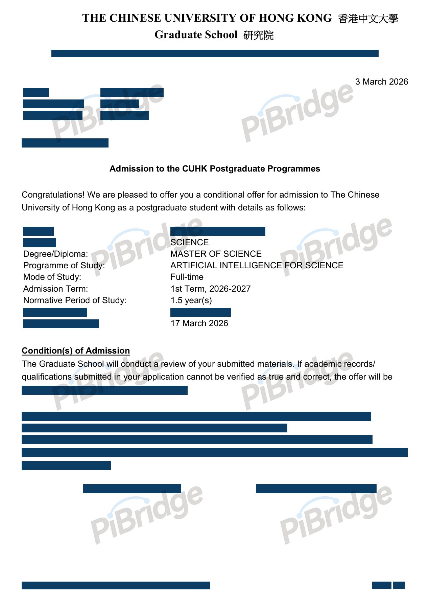
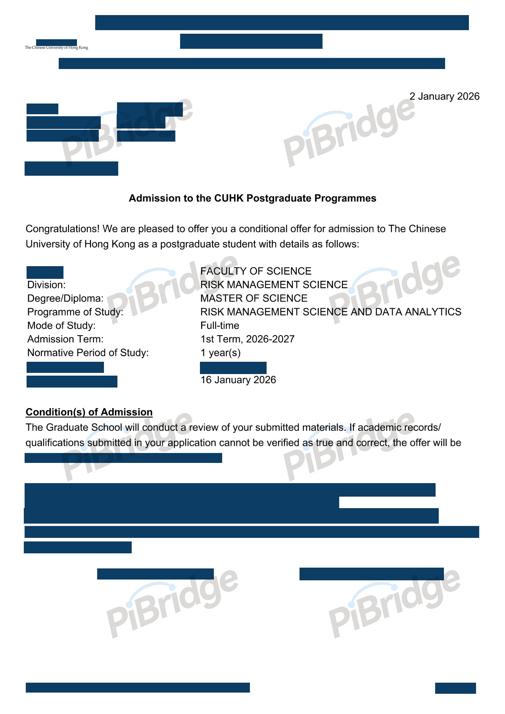

规划顾问
选校方案 · 时间规划表
文书导师
PS / SOP / CV / 推荐信
申请老师
递交记录 · 材料清单
面签导师
模拟面试 · 签证清单
项目管家
周度任务 · 进度记录
WHY CHOOSE PIBRIDGE
为什么选择派桥留学
一人一案
从具体背景与个人目标出发，讨论适合自己的准备路径。
多维度定位
同时考虑课程、经历、预算与专业要求，建立院校组合。
文书深度访谈
整理经历中的具体行动与收获，形成清楚的个人表达。
后续申请支持
根据阶段进展梳理后续选择与准备事项。
ACADEMIC ADVISORY TEAM
学术顾问团队
学术导师与行业导师，分别从研究与职业发展角度提供申请指导。
学术导师
从研究与学术发展角度，提供申请指导。
Ryan
牛津大学博士Rocky
香港中文大学博士 · 港府奖学金（HKPFS）Yu
牛津大学博士在 Journal of Fluid Mechanics 流体力学顶刊发表研究
Yao
牛津大学博士在 Journal of Fluid Mechanics 流体力学顶刊发表研究
行业导师
结合科技、金融、市场营销与人力资源领域的行业经验，提供职业发展视角。
Mark
新交所上市公司 · 大模型算法Matin
头部大模型公司 · 视频生成算法工程师Leo
头部互联网大厂 · 风控算法工程师Yan
头部科技公司 · 算法工程师Jacob
Web3 资深算法工程师Ana
中资股份制银行 · 算法工程师Paul
国内头部半导体设备企业 · 算法工程师Sandy
互联网大厂AI产品经理Jason
知名金融科技公司 · 产品经理Wilson
头部手机品牌海外营销主管Teddy
深创投投资经理Thomas
国资PE分析师Alex
互联网大厂科技投资分析师Erin
互联网大厂战投部门分析师Eric
中资大型券商 · 债券 IBDVincent
头部券商研究所 · 研究员Peter
量化策略工程师Cici
香港三大监管机构 · 风控部门Danny
头部一级卖方HR HeadRobbin
头部互联网大厂HRBRAND STORY
陪伴每一种可能走向世界
从信息梳理开始，让目标选择、准备重点与执行节奏逐步清楚。
- 围绕学生背景和申请目标，讨论院校与专业方向。
- 梳理材料、申请节点与入学准备事项。
- 结合已公开录取材料，了解不同申请路径。
OFFER WALL
Offer 展示与申请方向
展示已公开的脱敏 Offer，点击可查看对应录取文件。
 哥伦比亚大学MS in Operations Research
录取 · 2026 年秋季
哥伦比亚大学MS in Operations Research
录取 · 2026 年秋季
 伦敦政治经济学院MSc in Data Science
有条件录取 · 2026 年 9 月
牛津大学MSc in Mathematical Sciences
有条件录取 · 2026 年 10 月
伦敦政治经济学院MSc in Data Science
有条件录取 · 2026 年 9 月
牛津大学MSc in Mathematical Sciences
有条件录取 · 2026 年 10 月
 南洋理工大学MSc in Biomedical Data Science
有条件录取 · 2026 年 8 月
南洋理工大学MSc in Biomedical Data Science
有条件录取 · 2026 年 8 月
 香港中文大学MSc in Artificial Intelligence
有条件录取 · 2026/27 第一学期
香港中文大学MSc in Artificial Intelligence
有条件录取 · 2026/27 第一学期

香港中文大学MSc in Artificial Intelligence for Science 有条件录取 · 2026/27 第一学期 香港大学Master of Data Science
有条件录取 · 2026 年 9 月
香港大学Master of Data Science
有条件录取 · 2026 年 9 月
 香港大学MSc in Computer Science (General Stream)
有条件录取 · 2026 年 9 月
香港大学MSc in Computer Science (General Stream)
有条件录取 · 2026 年 9 月
 香港科技大学MSc in Financial Mathematics
有条件录取 · 2026 年 9 月
香港科技大学MSc in Financial Mathematics
有条件录取 · 2026 年 9 月
 南洋理工大学MSc in Artificial Intelligence in Medicine
有条件录取 · 2026 年 8 月
南洋理工大学MSc in Artificial Intelligence in Medicine
有条件录取 · 2026 年 8 月
 南洋理工大学MSc in Signal Processing & Machine Learning
有条件录取 · 2026 年 8 月
南洋理工大学MSc in Signal Processing & Machine Learning
有条件录取 · 2026 年 8 月

香港中文大学MSc in Risk Management Science and Data Analytics 有条件录取 · 2026/27 第一学期APPLICATION ASSESSMENT
获取免费申请评估
填写基本情况后，扫码通过微信继续沟通。

先了解背景，再沟通申请方向